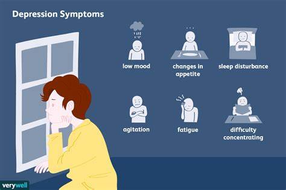

Quais os principais transtornos mentais ?
Ansiedade
Os sintomas de ansiedade podem se manifestar a nível físico,
como a sensação de aperto no peito e tremores,
ou a nível emocional
como a presença de pensamentos negativos, preocupação, insegurança ou
medo, por exemplo
e, geralmente, surgem vários sintomas ao mesmo tempo.
Estes sintomas podem surgir em adultos como uma
resposta a situações
estressantes como fazer uma prova ou entrevista de emprego,
por exemplo,
sendo considerado normal quando ocorrem de forma
ocasional. Além disso, os sintomas de ansiedade também podem
ocorrer em crianças, mas a criança pode ter mais dificuldade
para explicar o que está sentindo.
Depressão
 A depressão é caracterizada pela perda ou diminuição de
interesse e prazer pela vida, gerando angústia
e prostração, algumas
vezes sem um motivo evidente.
Hoje, a depressão é considerada a quarta principal causa de
incapacitação, segundo a Organização Mundial da Saúde.
Esse transtorno psiquiátrico atinge pessoas de qualquer
idade
e exige avaliação e tratamento com um profissional.
O desânimo sem fim é fruto de desequilíbrio na
bioquímica
cerebral, como a diminuição na oferta de neurotransmissores
como a serotonina, ligada à sensação de bem-estar.
Fobia Social

Fobia social, também chamada de transtorno de ansiedade social,
é um transtorno psicológico no qual a pessoa
apresenta uma ansiedade
e medo excessivos diante de situações em que poderia ser avaliada de
forma negativa
por seu desempenho ou pelo o que outras pessoas vão
dizer ou pensar sobre ela.
Os sintomas desse transtorno podem surgir em situações específicas,
como reunião com pessoas desconhecidas, comer na frente de outras
pessoas, ter uma entrevista de trabalho ou dar uma palestra, por
exemplo, o que pode interferir na vida pessoal,
familiar e
profissional.
Normalmente a fobia social é notada durante a infância e a
adolescência, sendo mais comum em mulheres.
Transtornos Alimentares

Transtornos alimentares são condições graves relacionadas a comportamentos
alimentares persistentes que
afetam negativamente sua saúde, suas
emoções e sua capacidade de funcionar em áreas importantes da vida.
Os transtornos alimentares mais comuns são anorexia nervosa,
bulimia nervosa e transtorno da compulsão alimentar
periódica.
A maioria dos transtornos alimentares envolve o foco excessivo no
peso, no formato do corpo e nos
alimentos, levando a comportamentos
alimentares perigosos.
Esses comportamentos podem afetar
significativamente a capacidade
do seu corpo de obter nutrição adequada.
Os distúrbios alimentares podem
prejudicar o coração, o sistema
digestivo, os ossos, os dentes e a boca e levar a outras doenças.
Estresse Pós Traumático
Transtorno do estresse pós-traumático (TEPT) é um distúrbio da ansiedade
caracterizado por um conjunto de
sinais e sintomas físicos, psíquicos e
emocionais em decorrência de o portador ter sido vítima ou testemunha de
atos violentos ou de situações traumáticas que, em geral, representaram
ameaça à sua vida ou à vida de terceiros.
Quando se recorda do fato, ele revive o episódio, como se estivesse
ocorrendo naquele momento e com a mesma
sensação de dor e sofrimento
que o agente estressor provocou. Essa recordação, conhecida como
revivescência,
desencadeia alterações neurofisiológicas e mentais.
Transtorno Bipolar

O transtorno bipolar, também conhecido como doença maníaco-depressiva,
é um transtorno cerebral que causa
mudanças incomuns no humor, na
energia, nos níveis de atividade e na capacidade de realizar as
tarefas.
Importante lembrar que nem toda mudança de humor significa que existe
um transtorno bipolar.
Para que a
doença seja identificada, é necessário fazer uma avaliação
com o psiquiatra ou psicólogo, para detectar como a
pessoa vivencia
as fases e como interferem no seu dia a dia.
Transtorno obsessivo-compulsivo

Transtorno obsessivo-compulsivo é uma doença mental composta de duas
partes: obsessões e compulsões.
As pessoas podem experimentar
obsessões, compulsões ou ambos, e elas causam muita angústia.
As obsessões são
pensamentos, impulsos ou imagens indesejados e
repetitivos que não desaparecem e tendem a causar muito
ansiedade.
Já as compulsões podem ser comportamentos como lavar, limpar ou
ordenar as coisas de uma
maneira específica ou repetitiva.
Importante entender que as compulsões são uma forma de lidar com as
obsessões.
Alguém que experimenta o transtorno obsessivo-compulsivo pode sentir
angústia se não puder completar a compulsão.